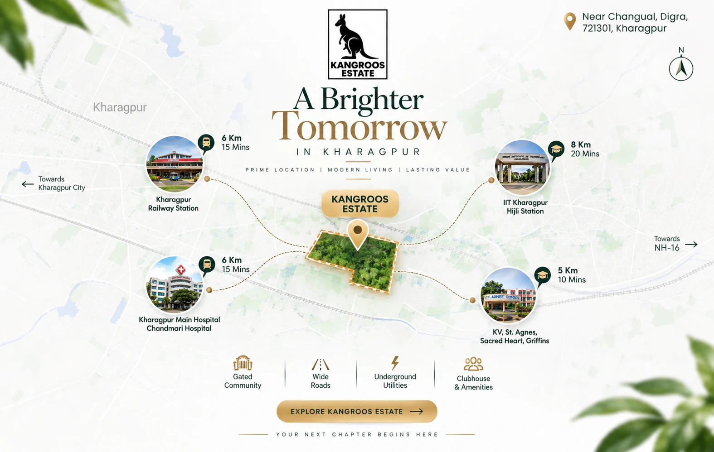

30-ft & 20-ft pitched roads
Designed around practical movement.
30-ft and 20-ft pitched roads within the project.
Explore a premium gated residential project near Changuail, Digra — with property, construction, documentation, infrastructure and design support under one roof.

Kangroos Estate brings together plot discovery, construction support, documentation assistance, infrastructure coordination and home design so the journey from land to living feels more considered.
Understand our approach →A premium residential development near Changuail, Digra, Kharagpur. This project is positioned as Kharagpur's first luxurious gated society.
30-ft and 20-ft pitched roads within the project.

Underground drainage and electric lines are among the supplied project features.
Explore construction, documentation and design support alongside the project.
Only facilities supplied in the project material are presented here.
This is the very first luxurious gated society in Kharagpur area.
Only property in kharagpur area with Road widths as braod as up to 30ft.
Advanced Infrastructure with modern civil engineering concepts will be delivered.
Convenience positioning mentioned in the project material.
Modern amenities to met all your celebration and entertainment needs.
Top class security features with 24x7 pharmacy availability.
A dedicated temple area to make all your Puja needs made easy.
Buy or sell with a clearer process, contextual guidance and a dedicated enquiry path.
Explore serviceMove from an empty plot toward a complete home with planning, estimation and execution support.
Explore serviceGet documentation assistance, process support, coordination and guidance — without government-authority claims.
Explore serviceUnderstand the supplied infrastructure offering and how to discuss site-specific requirements.
Explore serviceShape your home through elevations, estimates, planning and design coordination.
Explore serviceProject location and approximate connectivity are presented with clear qualifiers.
Each support area has its own scope, process and enquiry path.
No invented approvals, prices, returns, ratings or customer statistics.
Supplied marketing material cites approximate distances to the railway station, hospitals, schools and IIT Kharagpur / Hijli Station.
Approx. 15 mins as supplied.
Approx. distance as supplied.
Approx. 10 mins as supplied.
Approx. 20 mins as supplied.

Plot, construction, documentation, infrastructure or design — start with context.
Clarify location, requirements and the support that fits your situation.
Book a site visit, request a callback or continue the conversation on WhatsApp.
Project features, distances and positioning are based on supplied marketing material and should be verified before a purchase decision.
Tell us whether you're buying, selling, building or planning — and we'll direct you to the right conversation.
Useful answers about buying plots, selling land, property documents, construction and site visits in Kharagpur.
Start by sharing your preferred location, plot purpose, approximate size and budget with Kangroos Estate. You can then discuss available options, arrange a site visit and review the property documents before making a purchase decision.
Kangroos Estate provides plot buying and selling enquiry support. Share the plot location, ownership details, approximate area and your selling requirement so the property can be discussed and the appropriate next steps can be identified.
Before purchasing land, review ownership and title documents, chain of title, land records, mutation details where applicable, access, land-use considerations, encumbrances, boundaries and applicable local approvals. Independent legal verification is recommended before committing funds.
Yes. You can request a site visit to understand the location, access, surroundings and site conditions before proceeding with a property enquiry.
Yes. Kangroos Estate offers documentation and process-support services related to property enquiries. Legal or government approvals should always be verified with the appropriate authority or qualified professional.
Yes. The service offering includes house construction support, planning, estimates, design coordination and execution-related assistance for residential property requirements.
You can enquire through the website contact form, call 8670290777 or use WhatsApp on 8670290777. Share your preferred location, plot requirement, budget and intended use for a more useful initial discussion.
Kangroos Estate focuses on Kharagpur and surrounding property requirements in Paschim Medinipur. Availability and suitability depend on the specific property and current inventory.
Plot prices, availability and terms can change. Contact Kangroos Estate for current property information rather than relying on an old website listing.
Depending on the property, relevant records may include the sale deed, title-chain documents, land and revenue records, mutation records, tax or rent receipts, encumbrance-related information, approved plans or permissions where applicable, and identity documents. The exact document set should be confirmed for the property.
Residential plots can be considered for self-use and home construction subject to the property's land use, permissions, access, local rules and other applicable requirements. Verify these matters before purchase.
Call 8670290777, WhatsApp 8670290777, or email enquiry@kangroosestate.com for property, plot, construction and service enquiries.